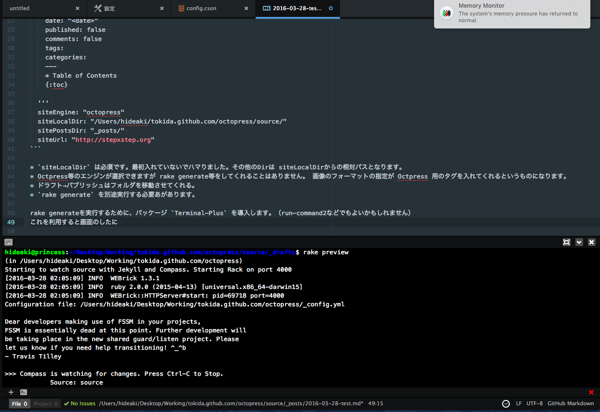

CyberduckのCli版duckを利用して簡単にクラウドストレージを利用する
CyberDuckという有名なクラウドストレージクライアントがあります。最近見たところ duck.sh なるツールが登場していたので試してみました。
今回はMacで実施したので
sudo brew install duck
で導入が出来る。
色々接続ができるがニーズがないであろうが SoftLayer のObject Storage (OpenStack Swift) に接続をしてみます。
$ duck --help
Usage:duck [options...]
URLs must be fully qualified. Paths can either denote a remote file (ftps://user@example.net/resource) or folder (ftps://user@example.net/directory/) with a trailing slash. You can reference files
relative to your home directory with /~ (ftps://user@example.net/~/).
Supported protocols
ftp FTP (File Transfer Protocol)
ftp://<hostname>/<folder>/<file>
ftps FTP-SSL (Explicit AUTH TLS)
ftps://<hostname>/<folder>/<file>
sftp SFTP (SSH File Transfer Protocol)
sftp://<hostname>/<folder>/<file>
dav WebDAV (Web-based Distributed Authoring and Versioning)
dav://<hostname>/<folder>/<file>
davs WebDAV (HTTP/SSL)
davs://<hostname>/<folder>/<file>
swift Swift (OpenStack Object Storage)
swift://<container>/<key>
s3 S3 (Amazon Simple Storage Service)
s3://<container>/<key>
gs Google Cloud Storage
gs://<container>/<key>
azure Windows Azure Storage
azure://<container>/<key>
rackspace Rackspace Cloud Files (US)
rackspace://<container>/<key>
You can install additional connection profiles in ~/Library/Application Support/Cyberduck/Profiles
--application <path> External editor application
--copy <url> <url> Copy between servers
-d,--download <url> <[file]> Download file or folder. Denote a folder with a trailing '/'
-D,--delete <url> Delete
-e,--existing <action> Transfer action for existing files
Options for downloads and uploads:
Resume Append existing files (resume)
Overwrite Overwrite all files (overwrite)
Rename Rename transferred files with a timestamp appended to the filename (similar)
Rename existing Rename existing files with timestamp appended to filename (rename)
Skip Skip transfer of files that already exist (skip)
Compare Skip files that match size, modification date or checksum (compare)
Cancel (cancel)
Options for synchronize:
Download Download changed and missing files (download)
Upload Upload changed and missing files (upload)
Mirror Download and Upload (mirror)
Cancel (cancel)
--edit <url> Edit file in external editor
-h,--help Print this help
-i,--identity <private key file> Selects a file from which the identity (private key) for public key authentication is read
-l,--list <url> List files in remote folder
-L,--longlist Long list format with modification date and permission mask
-p,--password <password or secret key> Password
-P,--preserve Preserve permissions and modification date for transferred files
--parallel <connections> Number of concurrent connections to use for transfers
-q,--quiet Suppress progress messages
-r,--retry <count> Retry failed connection attempts
--region <location> Location of bucket or container
--synchronize <url> <directory> Synchronize folders
--throttle <bytes per second> Throttle bandwidth
-u,--username <username or access key> Username
--udt Use UDT protocol if applicable
--upload <url> <file> Upload file or folder recursively
-v,--verbose Print transcript
-V,--version Show version number and quit
-y,--assumeyes Assume yes for all prompts
Cyberduck is libre software licenced under the GPL. For general help about using Cyberduck, please refer to https://duck.sh/ and the wiki at http://help.duck.sh/. For bug reports or feature requests
open a ticket at https://trac.cyberduck.io/newticket?version=4.7.3.
Not registered. Purchase a donation key to support the development of this software.
プロファイルをダウンロード
ここに記載されているファイルを ~/Library/Application Support/Cyberduck/Profiles/SoftLayer_TOK02_public.cyberduckprofile に保存する。これでこのプロファイルを利用できるようになります。
今回接続する SoftLayer 側の情報として以下のようになっているとします。
- TOK2上にObjectStorageを購入
- tokida というContainerを作成済み
- SoftLayer Portalからusername,passwordを取得済み
$ duck --list softlayer-tok02_public://tokida/ -u "$usernaem" -p "$password"
Login successful…
.file-segments
Dropbox
a_M00xxx_2003.nsf
a_M00xxx_2004.nsf
a_M00xxx_2005.nsf
これだけで接続ができます。duckコマンド経由で利用することで SoftLayer Object Storageの制約である5Gなども正しくマルチパートでアップロードしてくれるので非常に便利に利用できますね。
$ duck -u $username -p $password --upload softlayer-tok02_public://tokida/ hosts
Upload complete…
$ duck -u $username -p $password --delete softlayer-tok02_public://tokida/hosts
Deleting hosts…
同期もでき、download, mirror , upload が選択できる。
duck -u $username -p $password --synchronize softlayer-tok02_public://tokida/dotfiles ./
Login successful…
Choose what action to take:
Cancel (cancel)
Download Download changed and missing files (download)
Mirror Download and Upload (mirror)
Upload Upload changed and missing files (upload)
Action [cancel, download, mirror, upload]: upload
クラウドストレージは、費用面で非常に便利だが利用については各クラウドでそれぞれ利用方法が違いコマンドラインで利用するためにも際があるので使い勝手が良いとはいえませんでしたがこの duck を経由することで利用のハードルが下がります。
ATOMエディタからOctopressを利用する
最近はVIMではなくATOMを利用していることもあって Atom エディタから簡単に利用することが出来るのかやってみました。
パッケージ markdown-writer を利用します。
設定が _mdwriter.cson ファイルに出せるはずなのですが上手く行かなかったので個人設定 config.csonに直接設定を書きこみました。
1 2 3 4 5 6 7 8 9 10 11 12 13 14 15 16 17 18 19 20 | |
siteLocalDirは必須です。最初入れていないでハマりました。その他のDirは siteLocalDirからの相対パスとなります。- Octpress等のエンジンが選択できますが rake generate等をしてくれることはありません。 画像のフォーマットの指定が Octpress 用のタグを入れてくれるというものになります。
- ドラフト→パブリッシュはフォルダを移動させてくれる。
rake generateを別途実行する必要あがあります。
rake generateを実行するために、パッケージ Terminal-Plus を導入します。（run-command2などでもよいかもしれません）
これを利用すると画面のしたにTerminal画面が表示されます。

ターミナルを開くとドキュメントと同じディレクトリがPATHに設定されるのでそのまま rake preview などと実行すれば利用できます。
Bluemix-cli
Bluemix関連はもう色々出すぎていて何が何やらわからないのですが cf コマンドに代わる？bleumix Cliが登場していました。
さっそく導入してみたいと思います。私はMACユーザなのでMAC用のバイナリをダウンロードしてみたいと思います。
- Cloud Foundry CLI version 6.11 or later is required for Bluemix CLI. If your system does not already have the correct version of cf CLI, the installer will install it for you. (cfコマンド 6.11以上を導入しておく必要があります。 cf –version で確認します。私は 6.13が導入されていました）
- 導入後パスが設定されていません。.bashrc に以下のPATHを追加しておきます。bash_autocompleteが有るのが今時なツールですね。bluemix と入力した後に tab をいれるとオプションが自動的に出てきて便利です。
### Added by the Bluemix CLI
export PATH=$PATH:/usr/local/bluemix/bin
source /usr/local/Bluemix/bx/bash_autocomplete
ヘルプを見てみるとこんな感じです。
名前:
./bx - Bluemix と対話するためのコマンド・ライン・ツール
使用法:
[environment variables] ./bx [global options] command [arguments...] [command options]
バージョン:
0.3.1-5206a18-2016-03-02T03:30:07+00:00
コマンド:
api ターゲットの API エンドポイントを設定または表示します
login ユーザーをログインします
logout ユーザーをログアウトします
target ターゲット組織またはスペースを設定または表示します
info Bluemix 情報を表示します
list ターゲット・スペース内のすべての CF アプリケーション、サービス、コンテナー、コンテナー・グループ、および VM グループをリストします
scale アプリまたはコンテナー・グループのインスタンス数を変更します
curl Bluemix への未加工の HTTP 要求を実行します。content-type はデフォルトで「application/json'」に設定されています
config デフォルト値を構成に書き込みます
iam 組織、スペース、およびユーザーを管理します
catalog Bluemix カタログを管理します
app Manage Cloud Foundry applications
vm Manage virtual servers
ic Manage IBM containers
service Manage Bluemix services
network Manage network settings including region, domain, route and security group
security セキュリティー設定を管理します
plugin プラグインおよびプラグイン・リポジトリーを管理します
cf Bluemix のコンテキストを使用して Cloud Foundry CLI を実行します
help
コマンドについて詳しくは、'./bx help [command]' と入力してください。
環境変数:
BLUEMIX_COLOR=false 出力に色を付けません
BLUEMIX_TRACE=true API 要求診断を stdout に出力します
BLUEMIX_TRACE=path/to/trace.log API 要求診断をログ・ファイルに付加します
グローバル・オプション:
--version, -v バージョンを出力します
--help, -h ヘルプを表示します
色々なサブコマンドが利用できてこれは便利になります。
$ bx iam
名前:
bx iam - 組織、スペース、およびユーザーを管理します
使用法:
bx iam command [arguments...] [command options]
コマンド:
orgs すべての組織をリストします
org 指定された組織の情報を表示します
org-create 新しい組織を作成します (管理者のみ)
org-replicate 組織を別の地域に複製します (管理者のみ)
org-rename 組織を名前変更します (組織管理者が必要)
org-delete 組織を削除します (管理者のみ)
spaces 現行組織内のすべてのスペースをリストします
space 指定されたスペースの情報を表示します
space-create 新しいスペースを作成します (組織管理者が必要)
space-rename 現行組織内のスペースを名前変更します (組織管理者が必要)
space-delete 現行組織内のスペースを削除します (組織管理者が必要)
user-create 新しいユーザーを作成します (管理者のみ)
user-delete ユーザーを削除します (管理者のみ)
org-users 指定された組織内のユーザーを役割別に表示します
org-role-set ユーザーに組織の役割を割り当てます (組織管理者が必要)
org-role-unset ユーザーから組織の役割を削除します (組織管理者が必要)
space-users 指定されたスペース内のユーザーを役割別に表示します
space-role-set ユーザーにスペースの役割を割り当てます (スペース管理者が必要)
space-role-unset ユーザーからスペースの役割を削除します (スペース管理者が必要)
help
コマンドについて詳しくは、'bx iam help [command]' と入力してください。
これまで cf コマンドでアプリケーションを管理していましたがこのbluemixコマンドで Bluemixとして実施することが大分楽になりそうです。
Vyatta を VyOS にアップデートして Vxlan を利用する
VyOSを利用してみたかったので一旦Vyattaを導入してアップデート 1 を試みる。 利用している環境は、SoftLayer上の仮想サーバ(Vyatta6.5導入済み）を利用しています。
add system images
VyOSへのアップデートの方法は、公式サイトの以下のリンクに記載されています。
今回はVersion1.1を試してみたいと思います。
vyatta@vyatta-dal01:~$ show system image
The system currently has the following image(s) installed:
1: Old-non-image-installation (default boot)
vyatta@vyatta-dal01:~$ add system image http://ftp.tsukuba.wide.ad.jp/software/vyos/iso/release/1.1.0/vyos-1.1.0-amd64.iso
Trying to fetch ISO file from http://ftp.tsukuba.wide.ad.jp/software/vyos/iso/release/1.1.0/vyos-1.1.0-amd64.iso
% Total % Received % Xferd Average Speed Time Time Time Current
Dload Upload Total Spent Left Speed
100 231M 100 231M 0 0 5687k 0 0:00:41 0:00:41 --:--:-- 8782k
ISO download succeeded.
Checking for digital signature file...
% Total % Received % Xferd Average Speed Time Time Time Current
Dload Upload Total Spent Left Speed
100 836 100 836 0 0 540 0 0:00:01 0:00:01 --:--:-- 2229
Found it. Checking digital signature...
gpg: directory `/root/.gnupg' created
gpg: new configuration file `/root/.gnupg/gpg.conf' created
gpg: WARNING: options in `/root/.gnupg/gpg.conf' are not yet active during this run
gpg: keyring `/root/.gnupg/pubring.gpg' created
gpg: Signature made Thu Oct 9 17:42:59 2014 CDT using RSA key ID A442E6E9
gpg: /root/.gnupg/trustdb.gpg: trustdb created
gpg: Good signature from "SO3 Group Maintainers <maintainers@so3group.net>"
gpg: WARNING: This key is not certified with a trusted signature!
gpg: There is no indication that the signature belongs to the owner.
Primary key fingerprint: DD5B B405 35E7 F6E3 4278 1ABF B744 E25A A442 E6E9
Digital signature is valid.
Checking MD5 checksums of files on the ISO image...OK.
Done!
What would you like to name this image? [1.1.0]:
OK. This image will be named: 1.1.0
Installing "1.1.0" image.
Copying new release files...
Would you like to save the current configuration
directory and config file? (Yes/No) [Yes]:
Copying current configuration...
Would you like to save the SSH host keys from your
current configuration? (Yes/No) [Yes]:
Copying SSH keys...
Setting up grub configuration...
Done.
vyatta@vyatta-dal01:~$ show system image
The system currently has the following image(s) installed:
1: 1.1.0 (default boot)
2: Old-non-image-installation
この状態でrebootをすると新しいイメージで起動をしてきます。
Welcome to VyOS
vyatta@67.228.185.132's password:
Linux vyatta 3.13.11-1-amd64-vyos #1 SMP Wed Sep 3 20:04:22 UTC 2014 x86_64
Welcome to VyOS.
This system is open-source software. The exact distribution terms for
each module comprising the full system are described in the individual
files in /usr/share/doc/*/copyright.
vxlan on VyOS を試す
少し前に vxlan on Softlayer ということで同一データセンター内ではマルチキャストが通信できるのでvlanが使えたという事を書きました。VyOSの最新版ではvxlanがサポートされているとのことなので試します。
vyatta@vyatta-dal01# configure
[edit]
vyatta@vyatta-dal01# set interfaces vxlan vxlan0
[edit]
vyatta@vyatta-dal01# set interfaces vxlan vxlan0 group 239.1.1.1
[edit]
vyatta@vyatta-dal01# set interfaces vxlan vxlan0 vni 42
[edit]
vyatta@vyatta-dal01# ip a
vyatta@vyatta-dal01# set interfaces vxlan vxlan0 address '192.168.42.254/24'
[edit]
vyatta@vyatta-dal01# commit
[edit]
vyatta@vyatta-dal01# save
Saving configuration to '/config/config.boot'...
Done
[edit]
vyatta@vyatta-dal01# show interfaces vxlan vxlan0
address 192.168.42.254/24
group 239.1.1.1
vni 42
[edit]
vyatta@vyatta-dal01# ip a
4: vxlan0: <BROADCAST,MULTICAST,UP,LOWER_UP> mtu 1500 qdisc noqueue state UNKNOWN group default
link/ether b6:37:f4:fa:30:d0 brd ff:ff:ff:ff:ff:ff
inet 192.168.42.254/24 brd 192.168.42.255 scope global vxlan0
valid_lft forever preferred_lft forever
inet6 fe80::b437:f4ff:fefa:30d0/64 scope link
[edit]
他のサーバの設定は Vxlan on Softlayer - なんでもやってみるのが良いと思う として行います。現状でこの構成に今回の VyOS が追加されている形になります。
vyatta@vyatta-dal01:~$ ping 192.168.42.2
PING 192.168.42.2 (192.168.42.2) 56(84) bytes of data.
64 bytes from 192.168.42.2: icmp_req=1 ttl=64 time=0.635 ms
64 bytes from 192.168.42.2: icmp_req=2 ttl=64 time=0.402 ms
^C
--- 192.168.42.2 ping statistics ---
2 packets transmitted, 2 received, 0% packet loss, time 999ms
rtt min/avg/max/mdev = 0.402/0.518/0.635/0.118 ms
vyatta@vyatta-dal01:~$ ping 192.168.42.3
PING 192.168.42.3 (192.168.42.3) 56(84) bytes of data.
64 bytes from 192.168.42.3: icmp_req=1 ttl=64 time=1.52 ms
64 bytes from 192.168.42.3: icmp_req=2 ttl=64 time=0.303 ms
^C
--- 192.168.42.3 ping statistics ---
2 packets transmitted, 2 received, 0% packet loss, time 1001ms
rtt min/avg/max/mdev = 0.303/0.913/1.523/0.610 ms
ということで問題なく疎通が出来ています。
-
SoftLayerでは仮想サーバのOSを独自には導入できないので初期にVyOSが入れられない。 ↩
SoftlayerのslコマンドのDocker化
SoftLayerのSLコマンドをDocker化しました。 単にDockerhubのAutomated Buildで遊んでみたかっただけなのですが・・
特に理由ないのですが各Linuxサーバに Python + SoftLayer-Cli 入れるのと Docker 入れるのとどっちがいいかなと思った場合にアプリケーションに影響なく利用できそうなのはDockerかなと。
作ってみてローカルのMacbookで利用しているのですが便利です。
これまでVagrant経由でVM起動してそのなかでゴニョゴニョしていました。今回のDockerにしてもboot2dockerで結局のところ似たような感じなのですがconfig setupで複数のSoftLayer環境を用意する際や、VersionUpをした際に簡単に分離して管理できるのは楽でした。 (まあ.dotfile切り替えるだけなら別の手段もあるかと思いますが)
利用方法
想定
このツールは、IBM社のクラウドサービス「SoftLayer」のCLIコマンドである sl コマンドを利用することが出来ます。 本番機などであまりslコマンド及び前提であるpythonを導入したくない場合。Dockerを利用うすることでOS側に影響なくコマンドを利用することが出来ます。 このDockerのImageは470MByte前後のサイズに成ります。
設定
以下のコマンドで設定ファイルをコンテナ内部に作ります。
$ docker run -ti tokida/softlayer-cli config setup
通常のslコマンド同様にUsernameとAPIキーを設定して下さい。 次に、コンテナを自分用としてローカルにcommitしておきます。
$ docker restart 993ae5495011
一度コンテナをRestartします。
$ docker commit -m "my account" 993ae5495011 tokida/softlayer-cli:my
(数字はコンテナIDで docker ps -aで参照すること)
ここではTagにmyをつけています。
利用方法
$ docker run -ti tokida/softlayer-cli:my vs list
という形で利用することが出来ます。長いのでシェルでエリアス等をしておくと良いかと思います。
$ alias sl="docker run -ti tokida/softlayer-cli:my"
こうしておくと普段通り sl コマンドが利用できます。
Vxlan on Softlayer
これは何？
SoftLayerのネットワークはマルチキャストが使えるのでvxlanが動くのかを確認。
- 同一のSubnet内で利用可能か
- 同一のvlan間で利用可能か（これは今回オーダー出来ず）
- 異なるVLAN間（VLAN Spaning = on )で利用可能か
というところを確認する。
環境
今回用意したのはダラスデータセンター内に仮想サーバを2つ起動している状態。プライベートIPで割り当てられているのは同一のSubnet上で登録されている。OSはUbuntu14.04を利用。
仮想サーバは以下のコマンドで作成する。
sl vs create --datacenter=dal01 --cpu=1 --memory=1024 --os=UBUNTU_14_64 --domain=sl.com --hostname=test01 --hourly --san --disk=25,10 --key=mainkey --postinstall=https://gist.githubusercontent.com/tokida/5b58831c0d94ce7b25f2/raw/bootstrap4Ubuntu.sh
作成した結果は以下の感じになりました。同じSubnetになっていますね。違うSubnetに付け直したかったら動するのがいいのかな？:
:.........:............:...............:.......:........:................:.............:....................:...........:
: id : datacenter : host : cores : memory : primary_ip : backend_ip : active_transaction : owner :
:.........:............:...............:.......:........:................:.............:....................:...........:
: 6743772 : dal01 : test01.sl.com : 1 : 1G : 67.228.***.*** : 10.17.93.45 : - : ***** :
: 6816622 : dal01 : test02.sl.com : 1 : 1G : 67.228.***.*** : 10.17.93.46 : - : ***** :
:.........:............:...............:.......:........:................:.............:....................:...........:
同一Subnet内
以下のコマンドによりvxlanを設定する。今回は内部eth0に対して作成する
$ ip link add vxlan0 type vxlan id 42 group 239.1.1.1 dev eth0
$ ip link set up vxlan0
$ ip a add 192.168.42.3/24 dev vxlan0
$ root@test02:~# ip -d link show vxlan0
4: vxlan0: <BROADCAST,MULTICAST,UP,LOWER_UP> mtu 1450 qdisc noqueue state UNKNOWN mode DEFAULT group default
link/ether 2e:eb:95:ed:97:9d brd ff:ff:ff:ff:ff:ff promiscuity 0
vxlan id 42 group 239.1.1.1 dev eth0 port 32768 61000 ageing 300
test01は、192.168.42.2を付与、test02は、192.168.43.3を付与します。
Pingを実行すると
root@test02:~# ping 192.168.42.2
PING 192.168.42.2 (192.168.42.2) 56(84) bytes of data.
64 bytes from 192.168.42.2: icmp_seq=1 ttl=64 time=0.957 ms
64 bytes from 192.168.42.2: icmp_seq=2 ttl=64 time=0.377 ms
通信ができていることがわかります。マルチキャスト動いているようですね。
異なるVLAN間
3台目のサーバをサンノゼに作成します。この場合Subetが違いまたVLANが違う環境となります。VLANスパニングを有効にしているのでこのダラス⇔サンノゼ通信ができるようになっています。
:.........:............:...............:.......:........:................:.............:....................:...........:
: id : datacenter : host : cores : memory : primary_ip : backend_ip : active_transaction : owner :
:.........:............:...............:.......:........:................:.............:....................:...........:
: 6743772 : dal01 : test01.sl.com : 1 : 1G : 67.228.***.*** : 10.17.93.45 : - : ********* :
: 6816622 : dal01 : test02.sl.com : 1 : 1G : 67.228.***.*** : 10.17.93.46 : - : ********* :
: 6816998 : sjc01 : test03.sl.com : 1 : 1G : 158.85.***.*** : 10.89.0.170 : : ********* :
:.........:............:...............:.......:........:................:.............:....................:...........:
先ほど同様に設定を行い 192.168.42.4/24としました。
root@test01:~# ping 192.168.42.4
PING 192.168.42.4 (192.168.42.4) 56(84) bytes of data.
From 192.168.42.2 icmp_seq=1 Destination Host Unreachable
From 192.168.42.2 icmp_seq=2 Destination Host Unreachable
From 192.168.42.2 icmp_seq=3 Destination Host Unreachable
From 192.168.42.2 icmp_seq=4 Destination Host Unreachable
From 192.168.42.2 icmp_seq=5 Destination Host Unreachable
あわよくば動けば面白いなと思ったけど残念ながらこちらは通信出来ない模様ですね。さすがにDataCenterをまたいでマルチキャストが許可されていないのでしょうか。
SoftLayerに性能保証型iSCSI/NASが登場したので試してみた
2014/11/04 追記: [帯域]保証型と書いていましたが、帯域は保証されていないとご指摘を（確かにその通り）受けたので[性能]保証型にしました。さらに言えば性能も保証されていないのですが。
SoftLayerでの新機能で「性能保証型ブロックデバイス」が登場しました。 1月ほど前からAPIには登場していたのですがようやく正式にリリースされた感じですね。
これは何？
SoftLayerの性能保証型のブロックストレージを購入して簡単にfioでパフォーマンス測定してみましょう。 対象としては普段から利用していることもあり仮想サーバ上からUbuntu14.04を利用したいと思います。
- 容量 20Gから12TByteまで
- 性能保証 100IOPS から 6000IOPSまで
- iSCSI(Block Storage)とNAS(File Storage)の2つのインターフェースで提供
オーダーから設定まで
オーダ方法
オーダ時のオプションで利用OSを選択するようになっていますね。
管理ポータルから、Storage→Block Storage→Order Consistent Performanceを選択しましょう。

ここでの費用は、「ディスクサイズ」＋「IOPS」となるようです。この画像の場合、20 GB 100 to 1000 IOPSというは20GのiSCSIディスクはIOPS
として100から1000までが指定可能ということになります。一番安い、20G 100IOPSをオーダしてみたいと思います。
設定方法
購入したデバイス（ここではSL01SL29*****-1 (20 GB)のような名称)の詳細を確認します。
iSCSIデバイスらしくAuthorized Hostsという項目があるので利用したいサーバを指定します、すると「Username」「Password」「Host IQN」「Device Type」が該当のホスト向けに表示されます。
画面を見る限り以前までのSnapshotなどの機能はなさそうです（残念！）
今回のiSCSIはマルチパスで構成されているようなのでmultipath-toolsを導入して利用します。
1 2 | |
iSCSIの設定を行います。/etc/iscsi/initiatorname.iscsiのファイルにIQNを設定します。
1
| |
次に/etc/iscsi/iscsid.confを以下の内容を記載します。
1 2 3 4 5 6 | |
設定が終わったら /etc/init.d/open-iscsi restartで再起動を行います。
1 2 3 | |
iSCSIを探してみると2つのIPで見つけることが出来ました。先ほど書いたようにMultipathでの接続が前提のようですね。
1 2 3 4 5 6 7 8 9 10 | |
この作業により/dev/sdaと/dev/sdbとしてiSCSIが認識されます。また先ほど導入したmultipathを確認すると
1 2 3 4 5 6 7 | |
このようにFailover型でデバイスが登録されているのがわかります。
1 2 3 4 5 | |
device mapper経由では上記のデバイスとして認識されています。これ以降はこのデバイスに対してfdiskが有効なのでパーティションを作成して利用することに成ります。
1 2 3 4 5 6 7 8 9 10 11 | |
fdiskでパーティションを作成し、カーネルにデバイスの変更を通知してxfsformatを行います。
1 2 3 4 5 6 7 8 9 10 11 12 13 14 15 | |
実際にmountしてみる。恒久的に利用する場合には別途定義を行って下さい。
1 2 | |
IOPS試験の実施
簡単にするためにgistにスクリプトを置いています
1 2 3 | |
| Benchmark | Bandwiddh | IOPS |
|---|---|---|
| 4k, sequential read | 147 | |
| 4k, sequential write | 165 | |
| 4k, randam read | 107 | |
| 4k, randam write | 103 | |
| 32m, sequential read | 51.871MB/s | |
| 32m, sequential write | 12.221MB/s |
参考までに同じ試験項目でローカルディスク(100G SAN)を実施した場合
| Benchmark | Bandwiddh | IOPS |
|---|---|---|
| 4k, sequential read | 27362 | |
| 4k, sequential write | 26305 | |
| 4k, randam read | 14188 | |
| 4k, randam write | 22233 | |
| 32m, sequential read | 114.070MB/s | |
| 32m, sequential write | 113.188MB/s |
まとめ
今回オーダしたのは100IOPSのBlock Storageになりますが、確かに100前後で制御されているように見えます。帯域はこれがMaxなのか分かりませんがこのあたりも今後確認していきたいところですね。
良かった点は、iSCSIがMultipathになった点でしょうか、とはいえ手軽さはNFS(FileStorage)での利用ですかね。また帯域が保証されているので6000IOPSを複数束ねてRaid0構成も出来るかもしれませんね。ただし結構費用が高いのが辛いかもしれないですが。12TByte(6000IOPS)の場合 $1,200+$720になるので $0.16/GByte となりますね。

このパラメータが何を意味しているのか調べていないのですがAIXとかありますね！
悪かった点は、以前のiSCSIが抽象化された利便性の高いデバイスだったのですが今回はかなり素のiSCSIデバイスとしての利用になります。とくにSnapshotが使えないのは残念ですね。今回の場合にはこのiSCSIデバイスのバックアップをなにか考えなければいけません。12Tとか考えるとかなり面倒な感じですね。
参考
XMLRPCに大量にアクセスされている場合の回避策
さてCPU使用率が100%になったりApacheのデーモンが大量に発生したりした場合どんな原因が考えられますか？ 最近担当しているサーバからMemoryがいっぱいだよ、CPUがいっぱいだよとNew Relic経由でメールが届いたと思ったら触れなくなっていました。
調べてみるとhttpdが大量に起動してメモリがなくなりフォークしたプロセスがKillされている状態でした。標準の設定でhttpd.confを書いているのでそもそも大量にコネクションがあった場合（今回のようなケース）はメモリが足りないなという状態だったので計算をしみたところ一つあたり57MByteもメモリを使っているという富豪な設定になっていました。ApacheでLoadModuleされすぎです。（CentOSの標準パッケージの問題だと思いますが）
さて、そのようなことは横においておくとして今回の原因は xml-rpc.php に対して不特定の大量のアクセスが発生指定していることから起こっています。
以下の例は暫定でxmlrpc.phpを削除しています。
1 2 3 4 5 6 7 8 9 10 11 12 | |
対策
幾つかの対策が考えられます。
- XMLRPCの機能を無効化する（Wordpress3.5以降はディフォルトで有効になっているためソースを変更する必要がありそうです／VersionUp等の際にまた忘れる可能性があるので今回は選択しません）。
- プラグインで無効化（プラグインで無効化してもPHPが動くためCPUリソースは食べそうです）／これはこれで導入しておきましょう。
- 接続可能なIPアドレスを制限する（今回はこれ）
今回はこの3番目のアドレスで制限をしてみたいと思います。このサーバは、Public側とPrivate側に2つのネットワークインターフェースを持っているサーバとなっています。また設定についてはApacheだったので以下のようなディレクティブを追加することで対応が出来ます。
設定内容
httpd.confに以下を追記する。xmlrpc.php は 10.0.0.0 からのアクセスのみ許可にする。
1 2 3 4 5 | |
これでPrivateNetworki(10.0.0.0)側のみになりそれ以外は403でエラーになります。
1 2 3 4 5 6 7 8 9 10 11 | |
まとめ
今回リソースはNewRelicで見ていましたがログまでは保管していなかったため問題が発生している際に状況を調べるのが面倒でした。というかCPU100%の状態を解消しないと見ることが出来ませんでした。キチンとFluentd等で別のログサーバにデータを転送しておきたいと思います。
Serfを試してみる
はじめに
Software Design 2014/09号に「Serf・Consul入門」が載っていたのでそれを参考に少し動かしてみました。また記事を書かれている @zenbutu さんのQiita上でのまとめを参考にしています。
導入
http://www.serfdom.io/downloads.html
上記から各サーバにあったものを落とす。 ここではUbuntu14.04を2台で試すので
https://dl.bintray.com/mitchellh/serf/0.6.3_linux_amd64.zip
を利用する
$ apt-get install unzip
$ wget https://dl.bintray.com/mitchellh/serf/0.6.3_linux_amd64.zip
$ unzip 0.6.3_linux_amd64.zip
$ cp ./serf /usr/bin/serf
バージョンの確認
$ serf version
Serf v0.6.3
Agent Protocol: 4 (Understands back to: 2)
起動
バックグラウンドでの起動
root@serf1:~# serf agent &
[1] 10094
root@serf1:~# ==> Starting Serf agent...
==> Starting Serf agent RPC...
==> Serf agent running!
Node name: 'serf1'
Bind addr: '0.0.0.0:7946'
RPC addr: '127.0.0.1:7373'
Encrypted: false
Snapshot: false
Profile: lan
==> Log data will now stream in as it occurs:
2014/08/21 18:31:15 [INFO] agent: Serf agent starting
2014/08/21 18:31:15 [INFO] serf: EventMemberJoin: serf1 10.114.16.197
2014/08/21 18:31:16 [INFO] agent: Received event: member-join
エージェントの確認／クラスタの状態の確認
root@serf1:~# serf members
2014/08/21 18:32:13 [INFO] agent.ipc: Accepted client: 127.0.0.1:44401
serf1 10.114.16.197:7946 alive
2台目のサーバで、上記のSerf導入後以下を実施
root@serf2$ serf agent &
root@serf1$ serf join 10.114.16.197
2014/08/21 18:35:05 [INFO] agent.ipc: Accepted client: 127.0.0.1:48145
2014/08/21 18:35:05 [INFO] agent: joining: [10.114.16.197] replay: false
2014/08/21 18:35:05 [INFO] serf: EventMemberJoin: serf1 10.114.16.197
2014/08/21 18:35:05 [INFO] agent: joined: 1 nodes
Successfully joined cluster by contacting 1 nodes.
root@serf2:~# 2014/08/21 18:35:06 [INFO] agent: Received event: member-join
1台目でMemberの確認
root@serf1:~# serf members
2014/08/21 18:36:12 [INFO] agent.ipc: Accepted client: 127.0.0.1:44421
serf1 10.114.16.197:7946 alive
serf2 10.114.16.196:7946 alive
止める
root@serf1:~# serf leave
2014/08/21 18:44:31 [INFO] agent.ipc: Accepted client: 127.0.0.1:44457
2014/08/21 18:44:31 [INFO] agent.ipc: Graceful leave triggered
2014/08/21 18:44:31 [INFO] agent: requesting graceful leave from Serf
2014/08/21 18:44:31 [INFO] serf: EventMemberLeave: serf1 10.114.16.197
2014/08/21 18:44:31 [INFO] agent: requesting serf shutdown
2014/08/21 18:44:31 [INFO] agent: shutdown complete
2014/08/21 18:44:31 [WARN] agent: Serf shutdown detected, quitting
Error leaving: client closed
[1]+ 終了 serf agent
mDNSを利用したクラスタへのログイン
serfサーバをJoinするのにIPアドレスなどでしてしないでディスカバリーする。今回の環境はSoftLayerなのでマルチキャストDNS(mDNS)が通信できるためディスカバリーすることが出来ます。
先に2台とも停止しておくserf leave
root@serf1:~# ==> Starting Serf agent...
==> Starting Serf agent RPC...
==> Serf agent running!
Node name: 'serf1'
Bind addr: '0.0.0.0:7946'
RPC addr: '127.0.0.1:7373'
Encrypted: false
Snapshot: false
Profile: lan
mDNS cluster: serf
==> Log data will now stream in as it occurs:
2014/08/21 18:46:50 [INFO] agent: Serf agent starting
2014/08/21 18:46:50 [INFO] serf: EventMemberJoin: serf1 10.114.16.197
2014/08/21 18:46:51 [INFO] agent: joining: [10.114.16.197:7946] replay: false
2014/08/21 18:46:51 [INFO] agent: joined: 1 nodes
2014/08/21 18:46:51 [INFO] agent.mdns: Joined 1 hosts
2014/08/21 18:46:51 [INFO] agent: Received event: member-join
root@serf1:~# serf members
2014/08/21 18:47:01 [INFO] agent.ipc: Accepted client: 127.0.0.1:44467
serf1 10.114.16.197:7946 alive
次にserf2側でも実行
root@serf2:~# ==> Starting Serf agent...
==> Starting Serf agent RPC...
==> Serf agent running!
Node name: 'serf2'
Bind addr: '0.0.0.0:7946'
RPC addr: '127.0.0.1:7373'
Encrypted: false
Snapshot: false
Profile: lan
mDNS cluster: serf
==> Log data will now stream in as it occurs:
2014/08/21 18:47:23 [INFO] agent: Serf agent starting
2014/08/21 18:47:23 [INFO] serf: EventMemberJoin: serf2 10.114.16.196
2014/08/21 18:47:23 [INFO] agent: joining: [10.114.16.196:7946 10.114.16.197:7946] replay: false
2014/08/21 18:47:23 [INFO] serf: EventMemberJoin: serf1 10.114.16.197
2014/08/21 18:47:23 [INFO] agent: joined: 2 nodes
2014/08/21 18:47:23 [INFO] agent.mdns: Joined 2 hosts
2014/08/21 18:47:24 [INFO] agent: Received event: member-join
root@serf2:~# serf members
2014/08/21 18:47:31 [INFO] agent.ipc: Accepted client: 127.0.0.1:48185
serf2 10.114.16.196:7946 alive
serf1 10.114.16.197:7946 alive
使い方
このserfではEventというものを使って処理ができるようになるのが特徴。その際の処理はEvent Handlerと言うものが担っている。
EventHander自体は、スクリプト等の実行コマンドで各サーバ上に事前に用意しておく必要がある。したがって複数の処理をしたい場合などはGitなど経由でダウンロードする仕組みを組み込んでいくほうが良いと思われる。
最初に各サーバに最初のEventHandlerのシェルを配置する
以下の内容で ~/event.sh を作成
1 2 3 4 5 6 7 8 | |
次に各serfを起動する。一旦serf leaveで抜けておいて各サーバで以下のコマンドを実行する。
serf1側を、-role=serverとして serf2側を -role=agent として起動します。
serf agent -event-handler=./event.sh -discover=serf -role=<ROLE> &
これにより、何らかのイベントが発行される都度に event.shが実行されます。その際の書きだされる内容は
root@serf1:~# tail -f event.log
SERF_EVENT=member-join
SERF_SELF_ROLE=
SERF_SELF_NAME=serf1
-----
serf1
2014年 8月 21日 木曜日 19:16:36 JST
SERF_EVENT=member-join
SERF_SELF_ROLE=server
SERF_TAG_ROLE=server
SERF_SELF_NAME=serf1
2014/08/21 19:17:08 [INFO] serf: EventMemberLeave: serf2 10.114.16.196
2014/08/21 19:17:09 [INFO] agent: Received event: member-leave
-----
serf1
2014年 8月 21日 木曜日 19:17:09 JST
SERF_EVENT=member-leave
SERF_SELF_ROLE=server
SERF_TAG_ROLE=server
SERF_SELF_NAME=serf1
2014/08/21 19:17:27 [INFO] serf: EventMemberJoin: serf2 10.114.16.196
2014/08/21 19:17:28 [INFO] agent: Received event: member-join
-----
serf1
2014年 8月 21日 木曜日 19:17:28 JST
SERF_EVENT=member-join
SERF_SELF_ROLE=server
SERF_TAG_ROLE=server
SERF_SELF_NAME=serf1
次に
root@serf2:~# tail -f event.log
SERF_EVENT=member-join
SERF_SELF_ROLE=
SERF_SELF_NAME=serf2
-----
serf2
2014年 8月 21日 木曜日 19:17:28 JST
SERF_EVENT=member-join
SERF_SELF_ROLE=agent
SERF_TAG_ROLE=agent
SERF_SELF_NAME=serf2
つまり、このEventHandlerのスクリプトをゴニョゴニョすると色々出来ますね。という話です。任意のイベント名を指定して実行してみます。serf2からevent TESTを実行します。
root@serf2:~# serf event TEST
この時、serf1、serf2で同時に event.sh が実行されます。すると
serf1
2014年 8月 21日 木曜日 19:27:16 JST
SERF_EVENT=user
SERF_SELF_ROLE=server
SERF_TAG_ROLE=server
SERF_USER_LTIME=3
SERF_SELF_NAME=serf1
SERF_USER_EVENT=TEST
のようなイベントな環境変数で実行されます。 これを利用して、XXXサーバ機能として Role/Tag/Serf_Nameを駆使してサーバを特定して特定の処理を実施すると良いことになりますね。
まとめ
ざっくり言えば、用意しておいスクリプトをクラスタ環境で実行することが出来る。実行はサーバが起動した際等にmember-joinした際に動くなど、複数のサーバ間で何かの処理をしたい時に同時に実行することが出来るのが面白い。
スクリプトへ渡されるものは、SERF＿EVENTの場合 msmber-* は、標準入力で引き渡されます。その際にはホスト名やIPアドレスを取得することが出来ます。またEventの場合には、引数で指定したデータが渡ります。
によるとEventHandlerをイベント事に指定することも出来るようなので色々出来そうです。反面、スクリプトを各サーバに用意しておく必要がありこの部分をプロビジョニング時にうまいことする必要もありそうですね。
参考
SoftLayerでのAutoScale機能がリリース
SoftLayerにAutoScaleが発表されました。 先日からAPIにはScale関数が登場していたのですがようやく管理ポータル側から設定ができるようになっていました。
- この文章はRelease後の検証のため誤りが含まれている可能性がありますのでご注意下さい。
これは何？
SoftLayerのAutoScale機能についての説明
AutoScaleでは、トリガーの条件を元にサーバの台数を自動的に増やすことが出来る機能です。
トリガーには
- CPU%の値
- 毎日の時間
- 特定の日時
を選択することが出来ます。 またその際に実行できるアクションは
- 相対的にサーバを増やす（追加台数指定）
- 指定の台数にする（固定）
- CPU%を指定する
が選択できます。 これによって、朝6時に10台へ夜8時に1台に変更などという事が出来ます。またトリガーは複数選択できるためこの間もCPUに応じてAutoScaleを取ることが出来ます。
またAutoScaleの際には、Local Load Balancer（DataCenter内で利用可能なロードバランサーオプションの名前）に自動的に追加することが可能です。 これ意外にも、「Auto」ではなく「Manual」でスケールさせることも出来ます、これは便利そうです。
使い方
管理ポータル上から、Devices → Auto Scale を選択します。なにも設定がないので右上の Add Auto Scale Groupより追加を行います。
設定値を記載しておきます。まだ全ての動作を見ていないので不明な箇所は※で記載しておきます。以下の設定をした後に右下の Add Groupから構成を追加します。
Group Configuration
Group Details
| 分類 | 設定値 | 値 | 補足 |
|---|---|---|---|
| Group Details | Group Name | グループの名前 | ユニークになっていれば何でも良いみたい |
| Region | 地域の選択 | ||
| DataCenter | サーバを置くデータセンターを選択 | ||
| Termination Policy | Closest to next Charge, Newest , Oldest | サーバをRemoveする際にどのサーバから消すかの指定 | |
| Network | Private Network Only | ON/OFF | プライベートのネットワークのみ利用 |
| Private (VLAN) | VLAN名 | ||
| Public (VLAN) | VLAN名 | ||
| Group Setting | Minimum Member Count | 最小の起動数 | |
| Maximum Member Count | 最大の起動数 | ||
| CloodDown Prelod | 時間(min),Max 10day | AutoScale動作後の非監視期間（だと思う） |
Member Configuraion
| 分類 | 設定値 | 値 | 補足 | |:—-|:——|:–|:—-|
ここは一般的な仮想サーバのパラメータが指定可能、ホスト名とドメイン名が仮にwebとautoscale.comだとすると実際にプロビジョニングされる際にはweb-xxxxxx.autoscale.comのような名称が割り振られる。ここでは Provision Scirptが指定可能。
Policies
Policyは何個でも作ることが出来る
| 分類 | 設定値 | 値 | 補足 | |
|---|---|---|---|---|
| Policy Details | PolicyName | 必須 | ||
| Cooldown Preiod | 0(min)-10(day) | 全体の設定を利用するか、個別に作るか | ||
| Triggers | 指定 | CPU%を指定可能( 30%以上や10%以下等,複数組みあせ可能）,特定の曜日, 特定の期間 | ||
| Action | Scale By | Exact(固定) , Relative(相対的に), Percentage(%) | 値は符号なしの場合「増加」、マイナス符号の場合「削減」となる |
Local Load Balancers
| 分類 | 設定値 | 値 | 補足 | |:—-|:——|:–|:—-|
- あとで時間が有る時に追記する
Policiesでは、どの様に増やすのかが指定可能です。設定できるLoadBalancersはLocal Load Balancersのみですが基本的には問題無いと思います。指定したLBに自動的に組み込みが行われます。
実験
その1
最初にプロビジョニングされたサーバ上でcpuを100%にするスクリプトを実施
- Termination Policy : Newest
- Cooldown Period : 3min
- 指定したポリシー：80%以上3分間経過すると「Relatively 1 Members」（相対的に1つ追加）
- LLB: 80番ポート、ヘルスチェックはDefaultを指定
この状態でCPUを100%にすることで1台が追加されます。 合計にすると追加後は全体で平均CPU使用率50%(100%+0%)になっているはずです。したがって動きとしては3分後に1台追加 ~~ 、その後 3分で Cooldown し新しい方が消える（Terminate）予定です。 ~~ この設定の場合全体で80%以下になるまで1台づつAutoscaleで増加
結果
- 3分後に1台が追加
- 6分後特に変化なし（2台のまま継続)
- その後経か無いため1台目のCPUを0%に変更
- ~~ 30分放置したが結果変わらず ~~ これで正しい
- ~~ LogにもCooldownしたとかそういう結果は出てこない（事が正しのか不明だ） ~~ 正しいCooldown経過後の数値はログに出て欲しいが出ない
そもそもTerminateの指定は削除の指定であるのか、CPUの使用率は台数分の平均値なのか等が不明。
その2
最初にプロビジョニングされたサーバ上でcpuを100%にするスクリプトを実施
- Termination Policy : oldest
- Cooldown Period : 3min
- 指定したポリシー：30%以上3分間経過すると「Relatively 1 Members」（相対的に1つ追加）
- LLB: 80番ポート、ヘルスチェックはDefaultを指定
この状態でCPUを100%に1:することで1台が追加されます。
結果
- CPUは平均で30%なのか3までAutoScaleで起動、ログからは13分単位で追加されてる
- これにより監視しているCPUは合計の平均値であることは確実のようです。
- その後変化なし
その3
- Termination Policy : oldest
- Cooldown Period : 3min
- 指定したポリシー：30%以下3分間経過すると「Relatively -1 Members」（相対的に1つ削減）
- LLB: 80番ポート、ヘルスチェックはDefaultを指定
前提として「その2」の状態である
結果
- CPUの使用を0.x%にする
- その後1台づつ terminate policyに従い削除される
まとめ
- 一番最初上手くCPUを100にしても動いていませんでしたがその後動きました。Nimsoftは導入されていない状態のサーバがデプロイされています(CentOS)
- ~~ 2014/08/21 増えたサーバの「始末」をどうするのか？Termination Policy動いている？よくわからない ~~
- 問題なく増加、削除が可能である
- トリガー条件でスケジュールベースが選択できることは便利
- 監視トリガーで全体で%の指定が可能なので余力を常に確保するようにAutoScale出来る
- 手動で設定の変更ことなしに「QuickScale」が出来るのは面白い
- Regionの名前が初めて出てきた気がします。香港の場合には「as-hkg-central-1」そしてその中のDataCenter名が「Hong Kong2」という構成ですね。
参考
- @urasoko 氏のレポート：SoftLayer Introduces Auto Scale — Medium こちらを見ると色々Linkがありました。珍しくAutoScaleはドキュメントがあるなぁ。